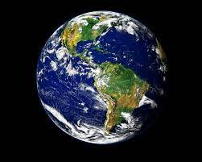
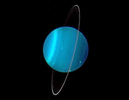

Terra
A Terra é o terceiro planeta a contar do Sol e o quinto maior do Sistema Solar. Sua forma é praticamente esférica, com uma deformação que causa um achatamento dos pólos. Até onde se sabe o planeta em que vivemos é o único do nosso sistema solar em condições de abrigar vida da forma como a conhecemos.
Marte

possui dois satélites (luas – Phobos e Deimos) e é visível a olho nu durante a noite. O movimento de rotação, ou seja, deslocamento em torno de seu próprio eixo, é realizado em 24 horas e 37 minutos, portanto um dia em Marte tem duração de 24 horas e 37 minutos.
Júpiter

é o maior planeta do Sistema Solar, tanto em diâmetro como em massa, e o mais próximo do Sol. Junto com Saturno, Urano e Netuno, Júpiter é um planeta gasoso, composto predominantemente por hidrogênio e hélio, e possui um núcleo formado por elementos mais pesados.
Saturno

possui 9 vezes o tamanho do planeta Terra e é formado principalmente por gases. Dispõe de 7 conjuntos de anéis circundantes e 82 luas, como Titã, a maior e mais conhecida. Saturno é o sexto planeta a partir do Sol e é o segundo maior planeta do Sistema Solar, ficando atrás apenas de Júpiter.
Urano
faz parte do conjunto de planetas do Sistema Solar e fica entre Saturno e Netuno. É o sétimo planeta partindo do sol. Ele tem a coloração azul-esverdeada originada da fusão dos vários gases inclusos em sua atmosfera.
Netuno

tem 24.622 quilômetros de raio, sendo cerca de quatro vezes maior do que a Terra. Para se ter noção, caso a Terra tivesse o tamanho de um níquel, Netuno teria o tamanho de uma bola de beisebol. O planeta leva 164 anos para dar uma volta completa em torno do Sol — bastante diferente dos 365 dias da Terra.
Mercúrio

Um dia em Mercúrio dura 59 dias na Terra. Um ano em Mercúrio dura 88 dias na Terra. A velocidade de rotação de Mercúrio pode atingir 180 mil km/hora. Mesmo estando próximo do Sol, sondas espaciais encontraram gelo em Mercúrio.
Vênus

é o segundo do nosso sistema solar a partir do Sol e o mais próximo da Terra, a apenas 61 milhões de quilômetros de distância. Uma de suas principais características é o fato de, como um planeta rochoso, sua superfície ser composta por vales e altas montanhas, cheias de vulcões.
sim
não talvez